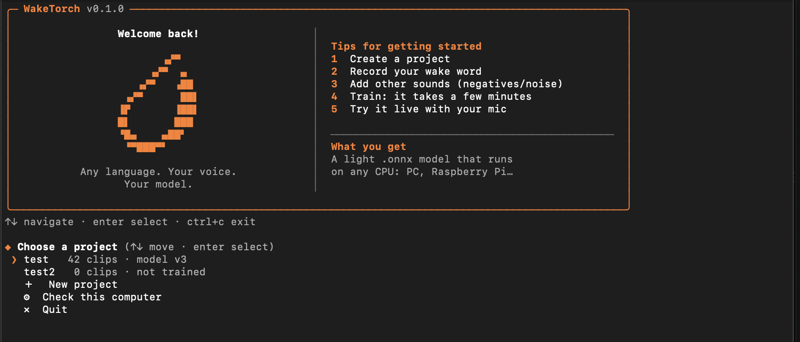

Train your own wake word in minutes, in any language.
WakeTorch is a free, open-source command-line tool that trains a custom wake word with your own voice. Record, train, test it live with your microphone and export a tiny ONNX model that runs on CPU. Everything happens on your computer.
$ waketorch

What is WakeTorch?
A wake word is the phrase that wakes up a voice assistant, like “Hey Google”. WakeTorch lets you create your own: pick any phrase, in any language, and train a model that listens for it.
Instead of notebooks, cloud consoles or synthetic voices, you get a complete training and testing interface in your terminal. You record or upload your voice, WakeTorch trains the model and shows the results, you try it live with your microphone, and you export a small ONNX file with a ready-to-run code example.
- Your voice, any language
- Trained on real recordings of you, in the language you actually speak.
- Minutes, not hours
- A guided CLI takes you from recordings to a working model.
- Local from start to finish
- Local training and local inference. No cloud and no account.
- One small model
- Export to ONNX and run lightweight inference on CPU.
How small? A trained model is about 1.3 MB. On an Apple M2, one CPU thread checks the audio in about 2 ms and uses roughly 8% of a core while listening. Measured with tests/onnx_test.py; results on your hardware will vary.
From your voice to a model in four steps
- Create a project and add your audio. Record or upload 30–50 clips of your wake word, some negatives (similar-sounding words) and a few minutes of background noise.
- Train. 2000 steps is a good starting point, and a built-in device check recommends settings for your hardware.
- Test. Check the results and the training curve, then speak to your microphone and see how the model reacts.
- Export. Get your
.onnxfile and a ready-to-run example for using it in your own program.
Install
You need Python 3.10 or newer (3.12 recommended), and a microphone if you want to record directly.
macOS and Linux
git clone https://github.com/alejandrolopezdata/waketorch.git
cd waketorch
chmod +x install.sh
./install.sh
# open a new terminal, then:
waketorchWindows (Command Prompt)
git clone https://github.com/alejandrolopezdata/waketorch.git
cd waketorch
install.bat
REM open a new terminal, then:
waketorchNo git? Download the ZIP from GitHub (Code, then Download ZIP), unzip it and run the installer from that folder. On Windows you can also double-click install.bat. WakeTorch is free software under the Apache-2.0 license.
How the model works
Follow the audio from the microphone to a detection: the sliding audio window, the preprocessing that turns sound into features, the network, and the threshold logic that decides when your wake word was said.
Documentation
One page per source file, covering the guided CLI and the model package. Each page explains what the file does and how it connects to the rest. To read the code itself, browse the repository.
| File | What it does | Docs |
|---|---|---|
| The guided CLI (cli/) | ||
__main__.py | Entry point that starts the CLI. | Read |
main.py | Main menu and overall flow of the guided interface. | Read |
screens.py | The individual screens: project, record, train, results and test. | Read |
guide.py | In-app guidance and tips shown while you work. | Read |
ui.py | Shared look and feel: colors, panels and messages. | Read |
charts.py | Draws the training loss curve in the terminal. | Read |
cover.py | The WakeTorch logo and start screen. | Read |
picker.py | Interactive menus and selection lists. | Read |
runner.py | Launches training and other long tasks from the CLI. | Read |
data_tools.py | Tools to import, check and organize your audio. | Read |
device_store.py | Remembers your computer check and recommended settings. | Read |
examples.py | Builds the ready-to-run code example for your model. | Read |
versions.py | Keeps track of each trained model version. | Read |
| The model package (src/wakeforge/) | ||
audio.py | Loads, resamples and prepares audio clips. | Read |
window.py | Cuts audio into the fixed-length windows the model listens to. | Read |
features.py | Turns audio into the features the network reads. | Read |
augment.py | Mixes in noise and variations to make training robust. | Read |
data.py | Builds the training and validation datasets. | Read |
model.py | The neural network architecture. | Read |
train.py | The training loop. | Read |
auto_statistics.py | Computes dataset statistics used to choose settings automatically. | Read |
export.py | Exports the trained model to ONNX. | Read |
modelfile.py | Reads and writes the model file and its metadata. | Read |
config.py | Loads settings from the configuration file. | Read |
projects.py | Creates and manages projects and their folders. | Read |
Questions
Can I train a wake word in any language?
Yes. WakeTorch learns from your own recordings, so it works with any phrase you can say, in any language.
Do I need a GPU or the cloud?
No cloud. Training runs on your computer. An NVIDIA GPU or Apple Silicon makes it faster, and CPU-only works but is slower. Running the exported model only needs a CPU.
What do I get at the end?
A single .onnx file, plus a ready-to-run Python example to use it in your own program.